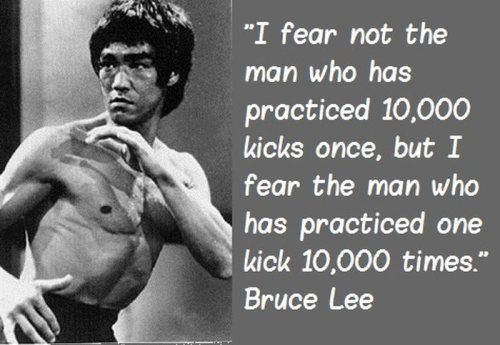

Tips - tips Belajar Menjadi Programmer
- by : Josse Surya Pinem
- at : Sunday, 12-June-2022
picture by pexels.com
Mungkin temen - temen sekalian masih binggung mengapa kita harus belajar programming/ngoding dengan susah" payah, hmmmmm... mungkin artikel ini akan membantu temen" ataupun memotivasi temen" agar kita konsisten belajar programming dan sukses menjadi programmer
- Tentukan Tujuan-mu
- Siapkan Mental
- Pilih Bahasa Pemograman
- Mencari Sumber Belajar
- Web Programming UNPAS
- Programmer Zaman Now
- Kelas Terbuka
- Sekolah Koding
- Kawan Koding
- ATM
Setiap Manusia tiada yang sempurna dan memilki Kelebihan ataupun Kekuranganya masing - masing . Oleh Karena itu, kita tidak boleh bergantung atuapun ikut"an kepada orang lain. Kita Harus menjadi apa yang kita inginkan, kita harus berkomitmen, kita harus menjadi programmer yang mandiri. Mungkin, temen" bingggung ada istilah software engineer, software developer, web-developer,android-dev dsb. Mungkin kalau kita petakan seberapa luas dunia programming ga akan ada habis-habis nya, dan begitu pula dengan bahasa pemograman yang ada seperti bahasa Python (teknologi blockchain), C++, PHP, javaScript, ataupun framework" yang ada dll. Kita sebagai Manusia harus saling melengkapi , jadi gausah binggung apa itu semua, mending temen" pilih salah satu, dan fokus dengan itu. Jadi temen" Jika ingin menjadi web-developer , tanamkan mindset temen" bahwa buat membuat website itu mengasyikan!, dan mudah ataupun renungkan kalau temen" mampu buat website dan websitenya bisa bermanfaat oleh lingkungan kita, bagaimana perasaan kita? ataupun yang menggunakan karya kita?? Pasti kita merasa ada kebangaan diri kita . So, intinya Fokus apa yang inginkan, dan Jangan pernah tergantung pada orang lain!
Siapkan mental, temen" harus menyiapkan mental temen", Jangan pernah merasa bahwa coding itu sempit, yang bener adalah coding itu sangat luas ibaratkan : for(let i = 1 ; i>0 ; i++){console.log(i)}. Coding itu tidak seperti yang kalian bayangkan, jika kalian sudah tamat kuliah 4,5 tahun , dan kalian fikir ilmu coding sudah habis, itu sangat salah, karena menurut aku coding itu seperti pepatah bilang "Semakin banyak kita tahu, Semakin banyak yang kita tidak tahu,". Temen" harus tangguh , harus menyiapkan mental ataupun segala error yang kalian hadapin , dan yang paling penting kalian harus kuat menghadapi adaptasi teknologi yang begitu pesat.
Ini masih menyangkut dengan list yang pertama, Setelah kalian sudah menuntukkan pilihan kalian, kalian harus lebih berkomitmen, yakinkan memang itu piihan kalian, karena hampir sulit rasanya, Jika kalian ingin expert di semua bidang teknologi, dan rasanya hampir sulit untuk menjadi expert di segala bidang dan ingat prinsip bruce lee, kurang lebih katanya seperti ini ; "Aku lebih takut orang yang memiliki 1 jurus dengan 1000x latihan, dari pada 1000 jurus dengan 1 x latihan". Begitu juga dengan teknologi atau apapun!. Jika kalian sudah memahami apa yang saya maksud silakan fahami roadmapnya atau jalur belajar yang kalian gelutin.
Setelah temen" sudah tau , apa yang menjadi passionate temen", Silakan cari referensi belajar yang kalian gelutin ,seperti dari Youtube, ikut bootcamp dengan ISA, Follow Social media tentang teknologi, dll. Mungkin temen" bertanya aku belajar dari mana ? Mungkin 90%nya dari youtube, 10% persen-ya dari artikel" lain, Ya karena jujur belajar di youtube jauh lebih menyenangkan dan mudah difahami, Oleh karena itu, tiada alasan kalau kita tidak bisa menjadi programmer, Aku ada referensi channel Youtube :
Mungkin temen" binggung apa itu ATM ? ATM itu adalah Auto teller Machine tapi boong wkwkwkkwk, bukan ya temen"... ATM adalah Amati Tiru Modifikasi, mungkin ini cara paling ampuh menjadi programmer karna kita dipaksa untuk berfikir keras, dan problem solve skill kita terus dilatih. Jujur aku terkadang agak kesusahan dengan methode ini, apalagi solusinya gada di stack over-flow ataupun referensi di youtube, apa itu stack-overflow?? ya di artikel ke-2 aku akan jelaskan, tapi aku berfikir kalau aku ga kesusahan, aku ga akan sukses, seperti yang pepatah bilang "Bersakit-sakit dahulu bersenang-senang kemudian "